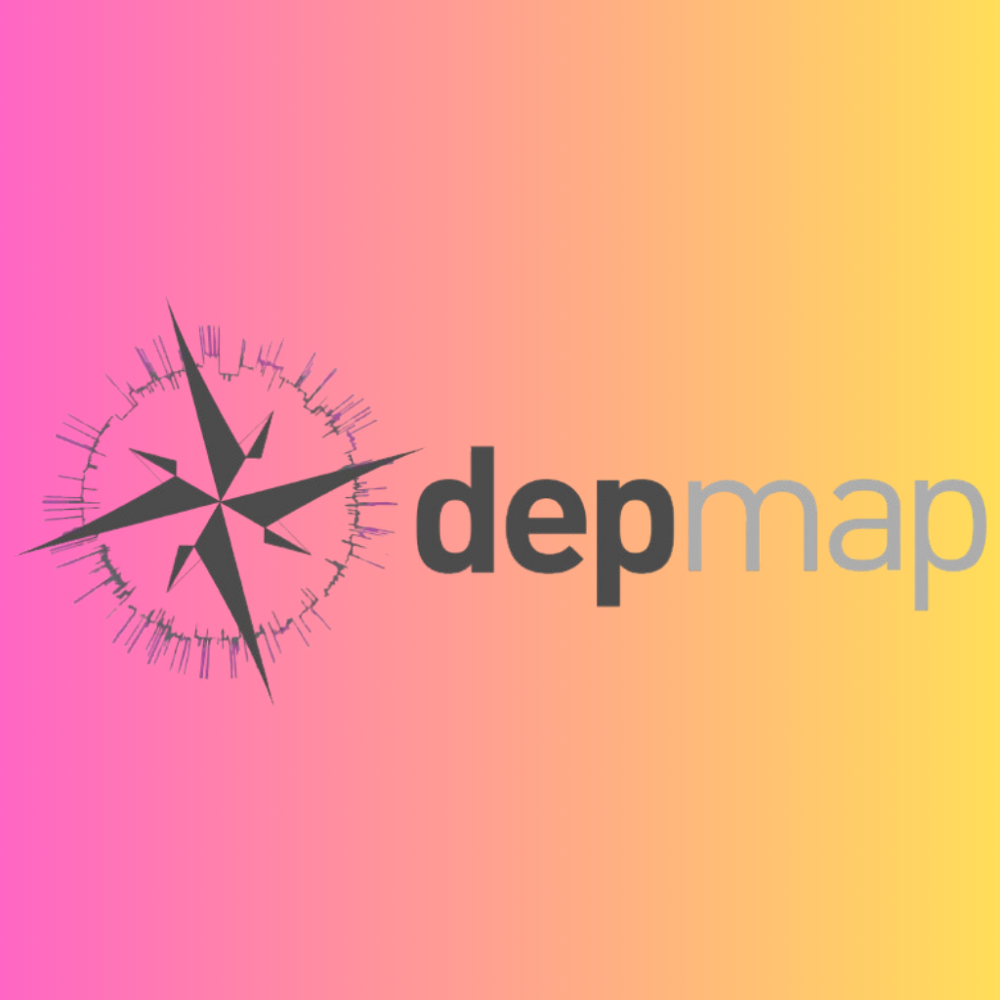
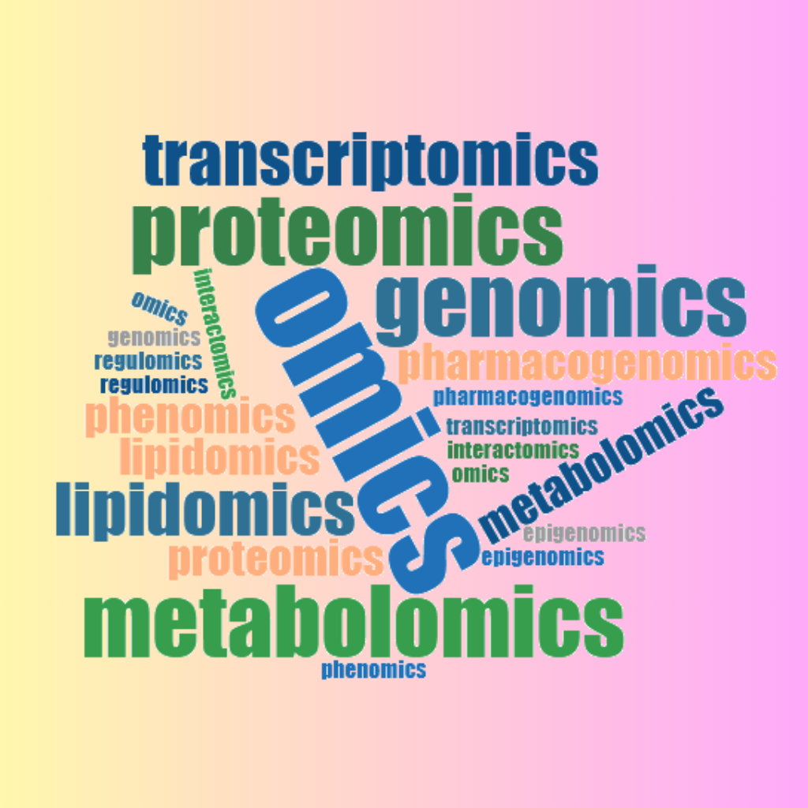
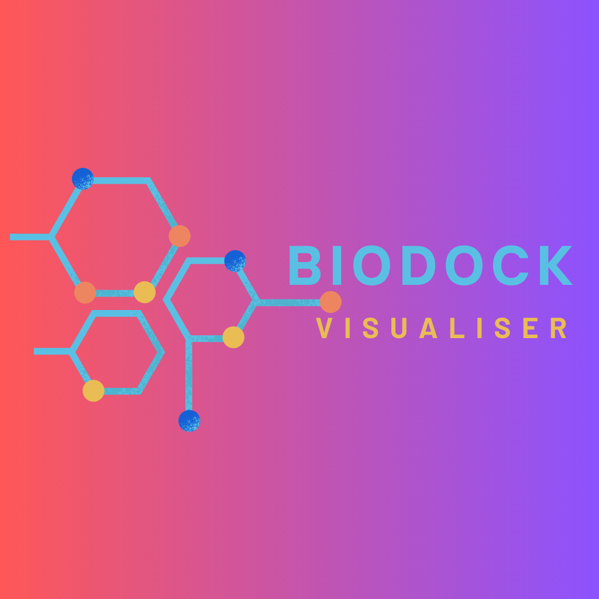
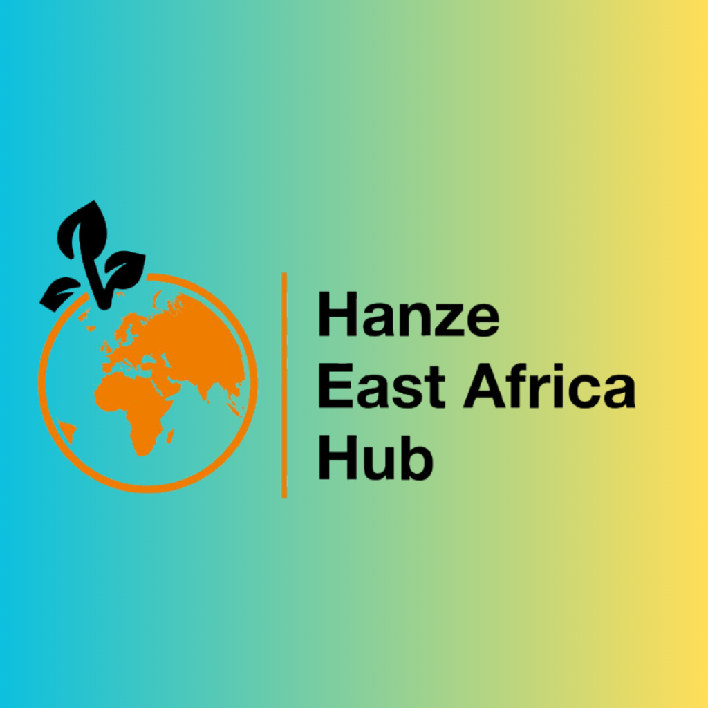
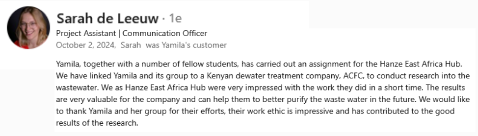
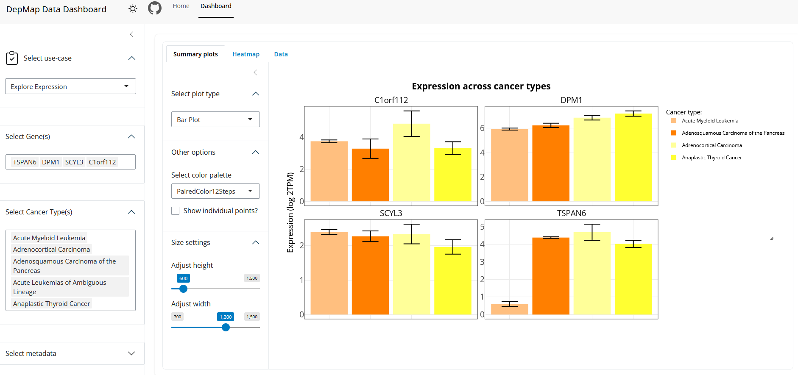
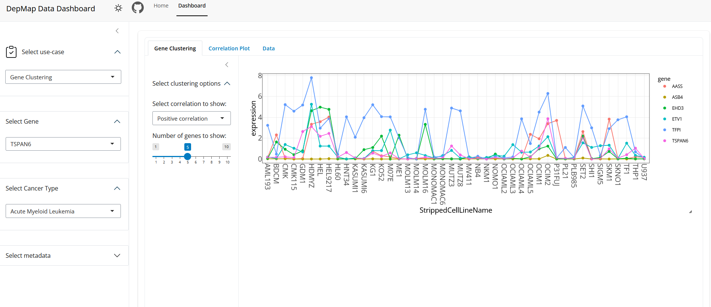
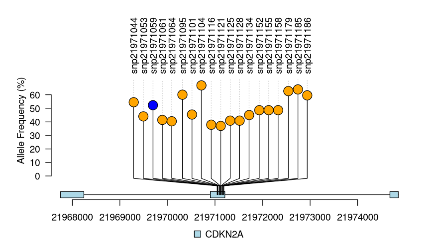
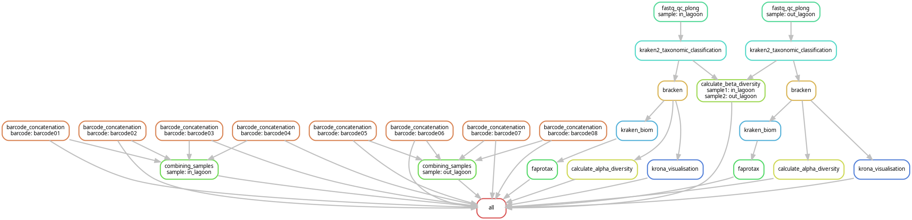

Bioinformatics Enthusiast - Data Visualization - Honours Student
Portfolio




About
Thank you for taking the time to look at my portfolio! My name is Yamila, and I am a honours bioinformatics student (undergrad) at Hanze University of Applied Sciences. Through this website, I hope to give you some insight into who I am, on a professional as well as on a personal level.
In life, I always like to give my all and this is reflected in my study results. I passed cum laude for my propaedeutic diploma and my GPA for my bachelor's is 9.4/10. I also engage in extracurricular activities, such as the Honours Programme and I help organize (social) events for my study.
I have always been interested in many different things and subjects, which is reflected in not only my main interests in bioinformatics but also in my hobbies.
In my free time, I like expressing myself creatively in various ways, of which crocheting. On an almost daily base, I like staying active by going to the gym and taking long walks. I also really enjoy learning languages, including Danish and Japanese.
One of my assignments was to create a bio-informatics web tool, using existing bio-informatics tools. The topic me and my group chose was protein-ligand docking, where 'docking' refers to predicting the most likely configuration of a ligand when it attaches itself to a protein. The web tool that resulted was 'BioDock Visualiser', this web tool allows users to dock selected ligand(s) onto selected protein(s) and visualize the results afterward. The web tool has a user-friendly interface (created with HTML and CSS) and the backend uses Python (Flask). Above and below you can see an impression of the web tool and here you can find the GitHub repo.
In assignment for the Hanze East Africa Hub, me and 3 other honours students have collaborated with the University of Eldoret (Kenya) and Agro Chemical & Food Company Limited (ACFC). This was a first time collaboration between the East Africa Hub and the Honours Department of Life Science & Technology. Together we looked at a problem that ACFC is facing, ACFC is a factory that produces ethanol from sugar molasses (waste product of sugar refinery). This process however results in 1.2 million liters of wastewater daily being released into the Nyando River, while this water does not meet the Kenyan standards due to high COD and BOD. Together with my group, we made it our goal to make the problem clearer, to gain a better understanding of what needed to be solved. We performed literature research, consulted experts in the field, analyzed water samples of different steps of the water purification process at ACFC, and summarized the results in an extensive document.
After writing the report, I one year later with a new group wrote a metagenomics pipeline for taxonomical and functional analysis of 16S data in .FASTQ format. Using this pipeline we were able to analyze samples from different steps in the wastewater purification process and gain insights into present microorganisms in the samples and on values such as the beta diversity. We wrote an article on our findings and made a poster. The code for the pipeline can be found here.

Visualizing DepMap Data

When: 2025, February-June
In collaboration with Research Centre Biobased Economy, under the guidance of Wynand Alkema, professor of Data Sciences for Life Sciences & Health, together with another bio-informatics student, we have developed an interactive data dashboard, visualizing DepMap data. This data contains large amounts of gene expression data (17000+ genes) in patients with various types of cancer (80+ cancer types).
This data dashboard allows people who are not familiar with data analysis or data visualization themselves, to visualize DepMap data. Examples of visualizations include; bar plots, box plots, violin plots, heatmaps, and correlation plots. The app has 3 different use cases, which include exploring gene expression (across cell lines/cancer types), gene clustering which allows for genes with similar expression profiles to the chosen gene to be found, and a use case that compares expressions of entire pathways across cancer types. The app also allows users to filter metadata (e.g. sex, ethnic background, and age group).
This project is something I did next to my regular curriculum, for my Honours Programme to deepen my knowledge of application design and data handling, under the guidance of a professor of Data Science.
Above and below there are examples of visualizations made in the application and the GitHub repo can be found here.

Omics

I have worked with different forms of omics research, including (meta)genomics, transcriptomics, and proteomics. Below I give brief summaries of omics projects I have worked on, including links to my logbooks and a bullet list of steps that I performed for these projects.
Proteomics (& Transcriptomics)
When: 2025, April-July
I am currently working on identifying biomarkers that correlate with biliary viability in donor livers. For this, I am using already available data and I will try and find patterns in the proteome and transcriptome by comparing groups with livers with high biliary viability, with groups with low biliary viability. Biliary viability is a measurement to indicate the viability of cholangiocytes, which are the epithelial cells of the bile duct. Measuring biliary viability before transplanting a donor liver, provides a risk assessment of the chances that post-transplant complications such as cholangiopathies will occur after transplantation. So far, there are no significant biomarkers to measure the viability, used parameters to determine viability differ per research center/hospital and often only include physiological factors such as bile pH. Finding biomarkers that support high or low biliary viability can help to clarify whether donor livers are suited for transplantation or not, possibly enlarging the donor pool, as the requirements for donor livers right now may be too strict.
I am fully using R to write a pipeline that transforms the data and allows for analysis and visualization. There is no link to a repository yet, as this project has not been completed so far.
Involved steps:
PCA and PLS-DA
Functional enrichment analysis with DEP
Differential gene expression analysis with DESEQ2
Creating a proteomic/transcriptomic profile for low/high biliary viability, to detect biomarkers
Literature research into liver transplants, normothermic machine perfusion (NMP), and biliary viability
Metagenomics
When: 2025, February-April
Together with a group I performed a metagenomic analysis of wastewater samples of an alcohol refinery in Kenya. The samples were derived from 3 different steps in the water purification process, before the water is released back into the river. We analyzed the data with a pipeline we created that allows for taxonomic classification and functional analysis of any 16S data. By analyzing the results of the pipeline we gained insights into the present OTUs (Operational Taxonomic Unit) and we presented these results in a written article, as well as with a poster. The code for the pipeline can be found here, I also kept a logbook, where I motivate what tools I chose and why and visualize some of the results.
Involved steps:
Writing a pipeline using SnakeMake
Taxonomic classification
Re-estimating abundances
Functional analysis
Calculating alpha/beta diversity
Visualizing results (found OTU's) with e.g. Sankey charts and Krona plots
Transcriptomics
When: 2024, September-November & 2025, April-July
During the same project as the genomics research above I have followed up with a transcriptomics analysis. Here we also used already available data but analyzed this with a different research question, here we specifically looked at how treatment with Palbociclib alters gene expression in certain PDX samples and looked further into any pathways that stood out. During this process, I also kept a logbook (written in Dutch).
Visualising results with e.g. volcano plots, MA-plot, expression distribution density plot, and visualization of pathways containing DEGs
Genomics
When: 2024, September-November
I have looked into existing data from 6 different samples with 2 different conditions, taken from the patient's blood and taken from PDX from mice. This data was previously gathered for the article "In vivo efficacy assessment of the CDK4/6 inhibitor palbociclib and the PLK1
inhibitor volasertib in human chordoma xenografts” and me and my group repeated the research process, with the same data but with new research questions and intentions. Such as using a newer version of the reference genome (hg38) and looking further into deletions that were mentioned in the article. During this research, I have kept an extensive logbook (written in Dutch) documenting my findings and analyzing and visualizing these.
Involved steps:
Quality control
Read mapping
Variant calling (detecting SNP's/indels)
Annotation
Visualising results with e.g. heatmaps, box plots, lollipop plots, and Venn diagrams
Writing (SnakeMake) Pipelines

When: 2025, February-April
I have some experience with writing a workflow/pipeline in SnakeMake ("a workflow management system to create **reproducible and scalable** data analyses.").
Together with my group, we created a 'Metagenomics Pipeline for Taxonomical and Functional Analysis'. This pipeline was made to analyze 16S data from the wastewater purification process of an ethanol refinery in Kenya (see more information on this in my portfolio, under "Hanze East Africa Hub"), but integrates all bash tools that are required for analysis of any 16S data in .FASTQ format. The pipeline performs quality control and trimming if needed, uses Kraken2 to produce a taxonomic classification report, and visualizes OTU (Operational Taxonomic Unit) assignments in a Krona piechart. It also calculates beta-diversity, using Bray-Curtis dissimilarity. For more information, there is a very extensive README. During the project, I kept a logbook, which can be found here and the pipeline itself can be found here. The image above is a DAG-chart (Directed Acyclic Graph) of the pipeline we have made, showing all the steps that are included.
Research Posters
For my study, I have made (research) posters on various topics, you can view them below.